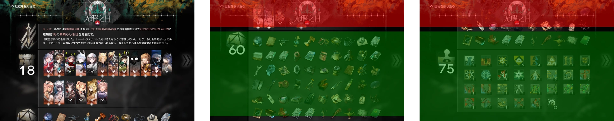

-
リザルトが全て写るように複数枚スクリーンショット撮影します。ファイル名を揃えるために上から順に撮影することを推奨します。
最初に初期位置で撮影します。2枚目以降は上部を除外した緑色の部分が有効な範囲で、上下に少し余裕を持って撮影します。最後に最下部に合わせて撮影します。

-
必要に応じてファイル名を変更します。昇順で並べたときにリザルトの上から順になるようにします。
リネーム不要例：IMG_XXXX.PNG, Screenshot_YYYYMMDD-HHMMSS.png
リネーム例 ：1.png, 2.png, 3.png, …
-
[ファイル選択]を押して画像を全て選択します。処理が完了すると結合された画像が表示されます。
処理はブラウザ上で行われ、処理前後の画像がアップロードされることはありません。
入力する画像は全て同じ大きさでなければなりません。
エラーが発生した場合や質問・要望があれば
作者まで。